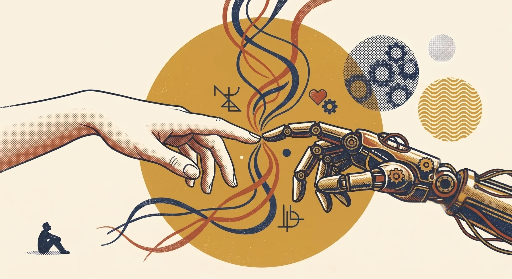

Sometimes you don't need another framework. You need someone who's done this — and the permission to hand them the task.
You don't need a vendor. You need a partner who's already done this institutionally.
✕ fallacy of guilt Solutions overcomes the question "is this cheating?" — the one the people running the future stopped asking years ago.
✕ fallacy of guilt Solutions overcomes the team question "should we be doing this ourselves?" — the one the rooms that move stopped asking years ago.

Sometimes you just need someone who's done this.
Sometimes you just need a partner who's done this.
It's OK to not do it this time.
Stop scoping a vendor.
Hand me the task.
Hire the partner who already did it.
You have an idea. It's been there for months. A small tool you keep mocking up in your head — the one that would save you twenty minutes a day if it existed. A Brain you keep wanting to build but never sit down to. A primer you wish your old company had given you on day one.
The hardest part is starting. Most people stall because they have a half-formed task and no one to hand it to. They feel silly asking. They tell themselves they should figure it out alone. They don't have to.
That's where I come in. Imagine if the small tool you keep mocking up is on your desk by Friday. Imagine if the brain you wish you had is set up by next Tuesday and writing itself by the week after. You hand me the task; I sit down and build it. Sometimes a working day, sometimes a week. The thing gets out of your head and into the world. That's the only point.
Most agencies offer "AI services" as a SKU bolted onto a list of capabilities. That isn't what your team needs. A SKU is a vendor relationship: you brief it, they deliver it, you check the box. Then it sits in a Notion page nobody opens.
What your team needs is a partner who can sit inside your operations, your culture, and your real workflow — and build with you instead of around you. Someone who's already done the hard institutional version once: 75% Claude utilization in four weeks, ~$433K in cost-recovery questions surfaced via MCP, an institutional vision-transfer artifact your peers can walk through right now.
That's the model. It replicates for your organization — tuned to your team's belief mix, role coverage, and rollout plan. Not a deliverable. A working artifact your team owns and runs after I leave.
Tap any card. Each one is a small analogy that lowers the bar — the back has the rest of it.
Just real time savings, starting now. Pick one. Do it today. See what happens.
turn over↻Theory is fine. Results are better. Three things you can do in the next hour that will save you real time — no setup, no training, no special access required.
The article will still be there. The thread will still be there. Open Claude. Type the actual problem.
turn over↻No more reading about AI. No more demos. Open Claude in a new tab. Pick one of these — the one that costs you the most time today — and just go.
The moment you get a result that surprises you — that's the switch. Everything changes after that moment.
"You are one task away from never working the old way again." turn back↺Former doctor, lawyer, coder, strategist, creative director. Speaks every language. Available 24/7.
turn over↻Claude scored in the 90th percentile on the Bar Exam. Top marks on the US Medical Licensing Exam. 95th percentile on the GRE. This is not a search engine. It's a colleague with credentials most of us will never have — and it's sitting in a browser tab you open twice a week to ask one question. McKinsey research found knowledge workers using AI save 1.5–2 hours every day. Not because the tool is magical — because they actually ask it things. That's a full extra workday every week, compounding.
"You wouldn't hire a brilliant strategist and only ask them to fix your typos. Stop doing that with Claude." turn back↺Every card here started as a task I handed to Claude. Shuffle the deck below — click a card, hit the arrows, or use ←/→. If a piece of it is the kind of thing you'd want for yourself or your team, hand me the task.
An interactive editorial dashboard about American wealth. Built in a Sunday afternoon. Cited by a working journalist.
open↗ II team enablementA 40-person agency moves from skeptical to fluent in four weeks. Fourteen entry points by belief system.
open↗ III one-for-one primerTen chapters tuned to one former colleague's career shape. Built in a working day. The next one takes 2–3 hours.
open↗ IV SaaS / web appMulti-API AI moodboard tool for agency creative work. Live and functional. Sixty seconds, not sixty minutes.
open↗ V D2C productHeirloom kit + AI story engine. The bedtime story changes every night, the kit doesn't.
open↗ VI long-form fictionA 340-page published novel about simulated worlds. AI as an authorship tool. The kind of thing I would never have made before.
amazon↗Claude wired to Excel, Asana, NetSuite via MCP. Surfaced ~$433K in cost-recovery questions in a single afternoon.
internal3,346 indexed conversations as a working second memory. The system that produced everything else here.
privateThe portfolio that talks back. AI chatbot per project, custom interactions, vibe-coded with Claude.
open↗On what AI can't do yet, and why that's still the real story.
B2E is the empty lane in experiential. That signal deserves a builder, not a vendor.
Reach out. If something landed and you want to talk it through — your work, your team, a thing you’re trying to figure out — say hi. I take a few consulting hours when they fit. Casual rate, casual scope — $200 to $1,000, depending on what we’re doing.
Take the quiz. Free. Ninety seconds. Find your fallacy and get the Curio Starter (PDF + .skill) in your inbox right after.
Go deeper. Two short docs for going further on your own.
"Where is this all going long-term?"
"Where is this all going long-term for us?"
Where this is all going.